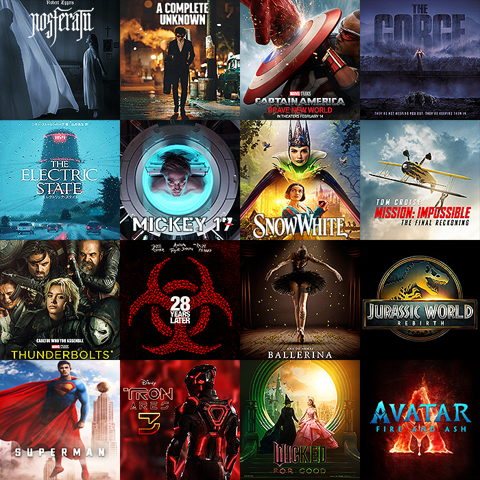
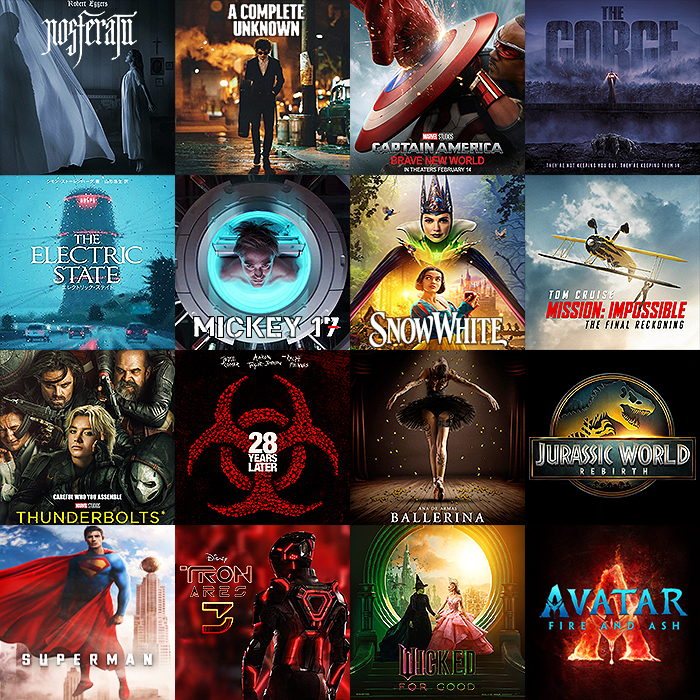

This project focuses on cleaning and analyzing a real-world dataset of company layoffs using MySQL.
It starts with raw data from a .csv file (layoffs.csv) and includes a full data cleaning process (handling nulls, removing duplicates, standardizing values).
Then, through a series of SQL queries, key insights were extracted: trends over time, layoffs by industry and country, and top affected companies.
The project demonstrates proficiency in SQL for real-world data wrangling and EDA tasks.
 

I conducted a statistical analysis on movie data to discover correlations between budget, revenue, popularity, and ratings.
I used Python (pandas, seaborn, scipy) to clean the data, calculate correlations, and generate visualizations.
I also ensured statistical integrity by avoiding inappropriate correlations between numerical and categorical values.
This project highlights my ability to clean data, apply statistical reasoning, and visualize insights effectively.

Developed a Python-based data pipeline that connects to the CoinMarketCap API to fetch and analyze live cryptocurrency market data.
The project includes data cleaning, time series tracking, and interactive visualizations using Pandas and Seaborn.
This demonstrates my skills in API integration, data processing, and exploratory data analysis, with a focus on financial datasets and trend visualization.

This project analyzes customer data to uncover patterns in bike purchasing behavior using Microsoft Excel.
It includes manual data cleaning, age categorization, and the use of pivot tables and charts.
An interactive dashboard was built with slicers and visuals to compare income and demographics between buyers and non-buyers.
The project showcases strong skills in Excel data transformation and dashboard design.
This project analyzes survey responses from data professionals around the world using Power BI.
The original dataset included demographics, professional background, salary, and job satisfaction indicators.
I cleaned and transformed the data using Power Query, addressing null values, standardizing column names, and fixing data types.

Created an interactive Tableau dashboard using Airbnb data from Kaggle, focusing on listings, pricing, availability, and reviews in Austin, Texas.
After combining and cleaning data from three CSV files (listings.csv, reviews.csv, and calendar.csv),
I built visualizations to highlight market trends and pricing dynamics.
Key insights include average price by room type, room type distribution, pricing by zip code (with map view), and annual revenue trends.
This project showcases my ability to perform data preparation and design compelling, insight-driven visualizations for real-world datasets.